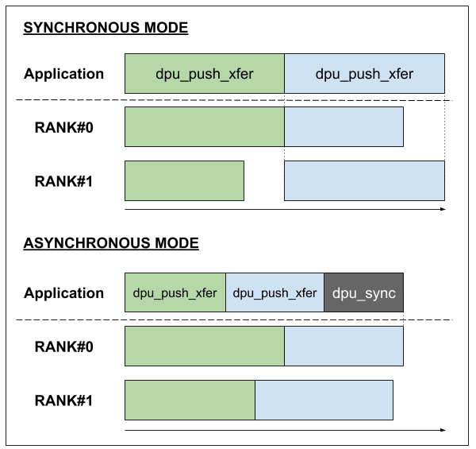
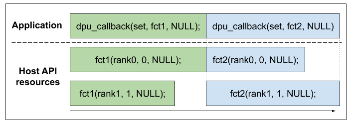
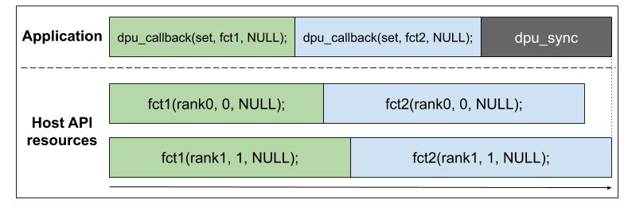
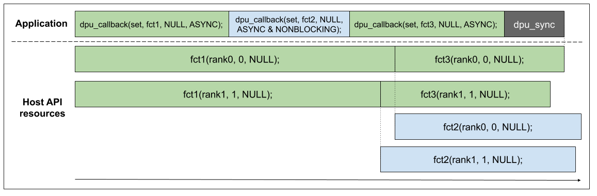
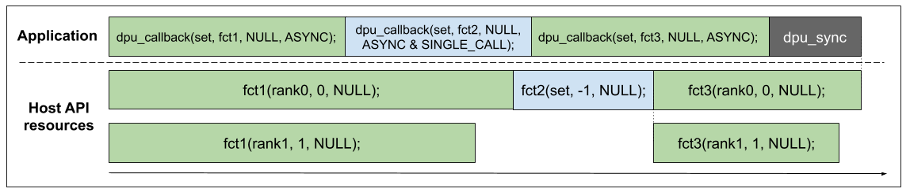
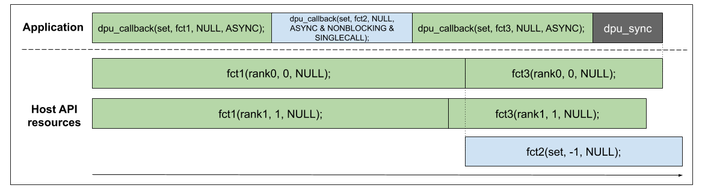

Advanced Features of the Host API
Multiple Ranks Transfer
Let’s consider a set of DPUs of several DPU ranks. Using copy functions on such a set will always be more efficient than iterating over the set to call the function on each DPU rank or DPU. This is because the toolchain uses threads to perform such operations in parallel.
If you never perform multi-ranks operation and do not want to have those threads created by your application, you can pass the following properties in the profile during the allocation of the dpu_set:
dpu_alloc(DPU_ALLOCATE_ALL, "nrThreadsPerRank=0", &dpu_set);
Asynchronism
dpu_broadcast_to and dpu_push_xfer can behave asynchronously using the DPU_XFER_ASYNC flag in their flag argument.
This can bring an important improvement in performance in your application as ranks can perform transfer independently.
While in the synchronous mode the API will wait for every rank of the set to complete an operation before starting another, the asynchronous mode will manage each rank independently enabling to start an operation on a rank even if other ranks have not completed the previous operation.
Here is a timeline example considering 2 transfers on a DPU set of 2 ranks, in both synchronous and asynchronous behavior:

Use dpu_sync to wait for every asynchronous operation to have been performed by all the ranks of a DPU set.
Callbacks
The dpu_callback function allows the user to schedule a call to a function between some asynchronous jobs (copy, launch).
dpu_error_t dpu_callback(struct dpu_set_t set, dpu_error_t (*fct)(struct dpu_set_t set, uint32_t rank_id, void *arg), void *arg, dpu_callback_flags_t flags);
The function can be used in many ways. The different behaviors are chosen with the flags argument. Let’s enumerate all the possibilities:
DPU_CALLBACK_DEFAULTBy default, the callback function will be called once per rank of the set given as an argument. All the calls will run in parallel.
dpu_callbackwill wait for each callback to end to give back the control to the application.Here is a timeline example considering 2
dpu_callbackcalls on a DPU set of 2 ranks:
DPU_CALLBACK_ASYNCThe asynchronous behavior is the same as the one for the copy functions. The callbacks will be enqueued and each rank will be run independently from one another.
Here is a timeline example considering 2
dpu_callbackcalls on a DPU set of 2 ranks:
DPU_CALLBACK_ASYNC | DPU_CALLBACK_NONBLOCKINGThe non-blocking behavior enables us to start a callback at a precise point, but which will be independent of every other dpu job (copy, launch, or other callback) that will be called after it.
Here is a timeline example considering a
dpu_callbackcall in a non-blocking asynchronous behavior between two calls ofdpu_callbackin asynchronous only behavior:
Note that
dpu_syncis not waiting for the non-blocking callback to end. It is the user’s responsibility to make sure that their non-blocking callbacks finish.
DPU_CALLBACK_ASYNC | DPU_CALLBACK_SINGLE_CALLThe single-call async behavior is the same as the asynchronous behavior except that it will only run one callback with the same DPU set the
dpu_callbackhas been called with.Here is a timeline example considering a
dpu_callbackcall in a single-call async behavior between two calls ofdpu_callbackin asynchronous behavior:
DPU_CALLBACK_ASYNC | DPU_CALLBACK_SINGLE_CALL | DPU_CALLBACK_NONBLOCKINGThis behavior is a merge of the two precedent behaviors. Here is a timeline example considering a
dpu_callbackcall in a single-call non-blocking async behavior between 2 calls ofdpu_callbackin asynchronous behavior:
DPU_CALLBACK_SINGLE_CALLUsing the single-call behavior without the asynchronous one does not make a lot of sense but is still allowed. It is the same as just calling the callback directly.
DPU_CALLBACK_NONBLOCKING&DPU_CALLBACK_NONBLOCKING | DPU_CALLBACK_SINGLE_CALLNon-blocking callbacks are only allowed in asynchronous mode. Those two configurations are invalid, and the
dpu_callbackfunction will return aDPU_ERR_NONBLOCKING_SYNC_CALLBACKerror.
Note that multiple ranks operations inside callback have undefined behavior and should not be used.
When using DPU_CALLBACK_NONBLOCKING behavior, you might need the Host API to allocate more thread resources to deal with all the callbacks running at the same time.
To do that, use the nrThreadsPerRank property in the dpu_alloc profile argument.